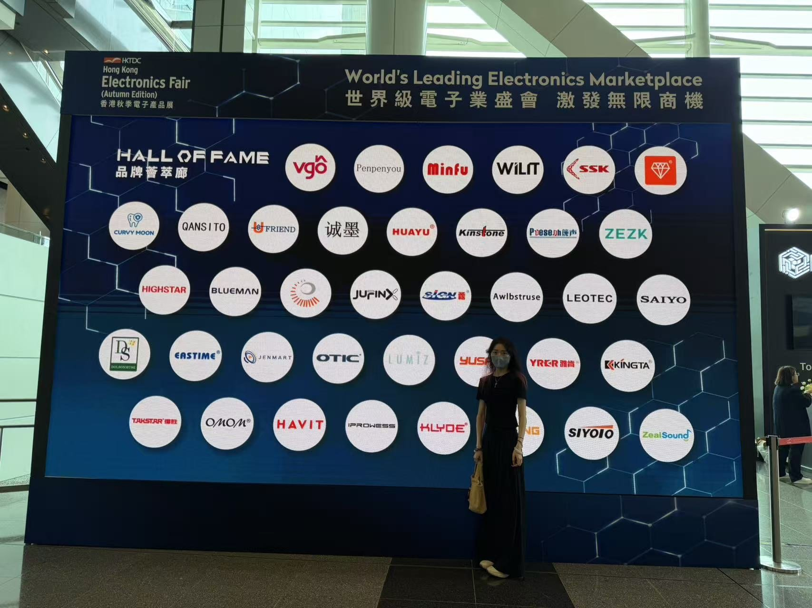
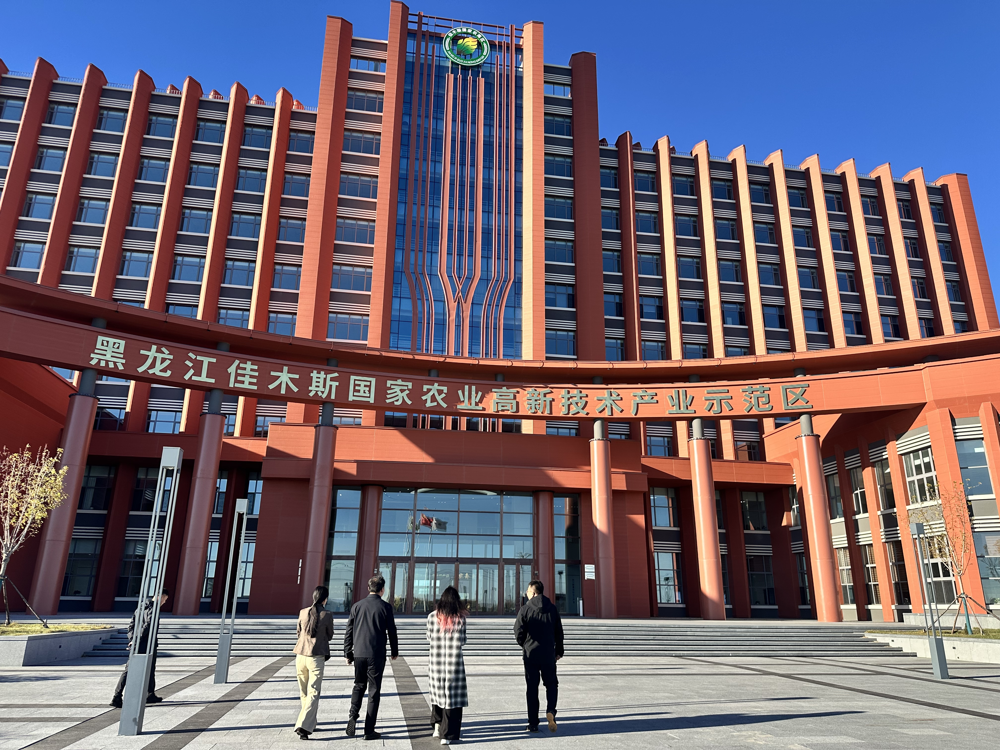

Based in Hong Kong and backed by high-tech production bases in Mainland China. We are committed to bringing natural, safe health products to the world.

"Combining Western rigorous R&D systems with Eastern traditional plant extraction wisdom."
The founder of TIANDING graduated from a prestigious university in the United States. Bringing cutting-edge international health concepts and scientific research visions back to China, we are dedicated to providing truly scientifically-based health products for global consumers.

October 2026
Senior management of HK TIANDING INTERNATIONAL TRADE LIMITED attended the Hong Kong International Outdoor and Tech Light Expo at AsiaWorld-Expo, and also visited the Hong Kong Pavilion at Eco Expo Asia, held at the same venue during the same period.
View details →
October 2026
Senior management of HK TIANDING INTERNATIONAL TRADE LIMITED attended the Hong Kong Electronics Fair (Autumn Edition) at the Hong Kong Convention and Exhibition Centre and toured exhibition areas including the Hall of Fame.
View details →
October 2026
An executive team from Wanji Group’s Shenzhen, Hengqin, and Hong Kong operations visited Jiansanjiang, Heilongjiang, to inspect the anthocyanin industry project and hold discussions with the local government and the park administration.
Read more →Backed by state-owned enterprise background and high-tech equipment for compliant source capacity.
Collaborating with authoritative institutions like the Chinese Academy of Inspection and Quarantine (CAIQ) to lead the formulation of quality and testing standards for high-activity anthocyanins.
Strategic collaborations with renowned pharmaceutical companies such as Korea Nongahn Alliance and Jilin Qingsheng Pharmaceutical. Based at Tongjiang Port and the China-Russia railway bridge to build cross-border channels.
Wanji Biotech Health Industrial Park covers 60,000 sqm with a total investment of 1 billion RMB. Phase 1 is operational, producing 2 tons of high-purity anthocyanins annually with an output value of 200 million RMB.